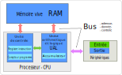
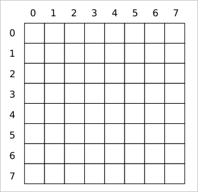
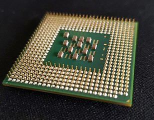

Architecture de Von Neumann#
L’ordinateur est une machine pensée par le mathématicien et physicien américano-hongrois John Von Neumann.
Le principe, consiste à insérer un programme informatique dans une mémoire et l’exécuter par l’ordinateur sans intervention humaine. L’architecture de l’ordinateur se compose de :
La mémoire centrale
L’unité centrale ou processeur (CPU)
Les bus de communication entre la mémoire et le processeur
Les unités d’entrée et sortie que sont les différents périphériques (disque dur, clavier, …)
Le schéma ci-dessous en donne une représentation:
Un ordinateur manipule de l’information codée en binaire, c’est à dire des bits qui valent 0 ou 1. Ces bits sont regroupés par 8 et forment un octet. Les capacités d’un ordinateur sont exprimées par des multiples d’octets : kilo-octet (Ko), mega-octet (Mo), giga-octet (Go) et tera-octet (To).
Mémoire vive d’un ordinateur#
La mémoire centrale appelée RAM (Random Access Memory) contient les programmes à exécuter et les données des programmes en binaire.
Elle peut se représenter comme un tableau de cellules mémoires appelées mots mémoires.
La taille des cellules ou mots mémoires peut être de 32 ou 64 bits.
Chaque cellule est repérée par une adresse mémoire unique, association d’un identifiant de colonne et d’un identifiant de ligne.
L’accès au contenu du mot mémoire est en lecture et / ou en écriture.
Note
La mémoire centrale est volatile, ce qui signifie que toutes les données sont effacées lorsqu’il n’y a plus de tension électrique.
La mémoire centrale ne doit pas être confondue avec d’autres mémoires, comme les mémoires persistantes dites mémoires de masse.
L’unité centrale ou processeur (CPU)#
Le processeur d’un ordinateur est le cerveau de la machine, constitué de millions de composants électriques rassemblés sur une puce de petite taille.
On distingue deux unités dans le processeur : l”unité arithmétique et logique et l”unité de contrôle.
L’unité arithmétique et logique (UAL)
L’unité arithmétique et logique (UAL) effectue les opérations mathématiques et les opérations logiques. Il contient un accumulateur qui stocke les résultats des calculs.
L’unité de contrôle
L’unité de contrôle joue le rôle d’un chef d’orchestre. Il charge les instructions du programme et les données contenues en mémoire vive dans des registres puis les envoie à l’UAL pour le traitement. Il contient :
un registre d’instruction qui est une petite mémoire interne au processeur dans laquelle sont placées les instructions du programme à exécuter.
un compteur de programme qui contient l’adresse de la prochaine instruction à exécuter et un nombre entier qui augmente de 1 à chaque nouvelle instruction.
L’horloge
Le processeur contient aussi une horloge qui rythme l’exécution des programmes et des échanges entre le processeur et la mémoire. La fréquence du processeur, exprimée en giga hertz (GHz), indique le nombre de cycles que le processeur peut réaliser en 1 seconde. Chaque cycle d’horloge se déroule de la façon (simplifiée) suivante:
l’adresse contenue dans le compteur de programme est envoyée à la mémoire
l’instruction contenue dans cette mémoire est envoyée au registre d’instruction du processeur
le compteur de programme est incrémenté de 1 et se tient prêt à aller chercher l’instruction suivante pour le prochain cycle
l’instruction est analysée et décomposée en code opération (OP) puis envoyée à l’unité arithmétique et logique
l’opération est effectuée avec récupération de données en mémoire si besoin
le résultat est conservé dans l’accumulateur jusqu’à la prochaine opération
Un cycle recommence avec l’instruction suivante et ainsi de suite.
Les bus de communication#
Le processeur et la mémoire communiquent par l’intermédiaire de bus. On distingue trois types de bus:
le bus d’adresse qui permet au processseur d’accéder à l’emplacement de la mémoire.
le bus de données qui permet au processeur et à la mémoire d’échanger les données.
le bus de contrôle qui indique l’action à réaliser: lire ou écrire en mémoire.
Dans le processeur même, il y a des bus entre l’unité de contrôle et l’unité arithmétique et logique. La recherche et le développement de processeur tente de réduire au maximum ces bus d’échanges qui augmentent les temps d’exécution d’un programme.
Les unités d’entrée-sortie E/S#
La dernière partie de l’architecture de Von Neumann concerne les entrées et sorties appelées périphériques. Il existe de nombreux périphériques d’entrée et de sortie :
Les périphériques d'entrée :
Les périphériques de saisies comme le clavier et la souris;
Les manettes de jeu, les lecteurs de code (code barre, qrcode, etc.)
Les scanners, les appreils photos, les webcams, etc.
Les périphériques de sortie :
les écrans et vidéo-projecteurs,
les imprimantes,
les hauts parleurs, etc.
Les périphériques d'entrée et de sortie:
les lecteurs de disques (CD, Blue Ray, etc.)
les disques durs, les clés USB ou les cartes SD,
les cartes réseaux, wifi, etc.